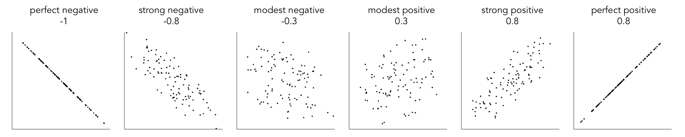
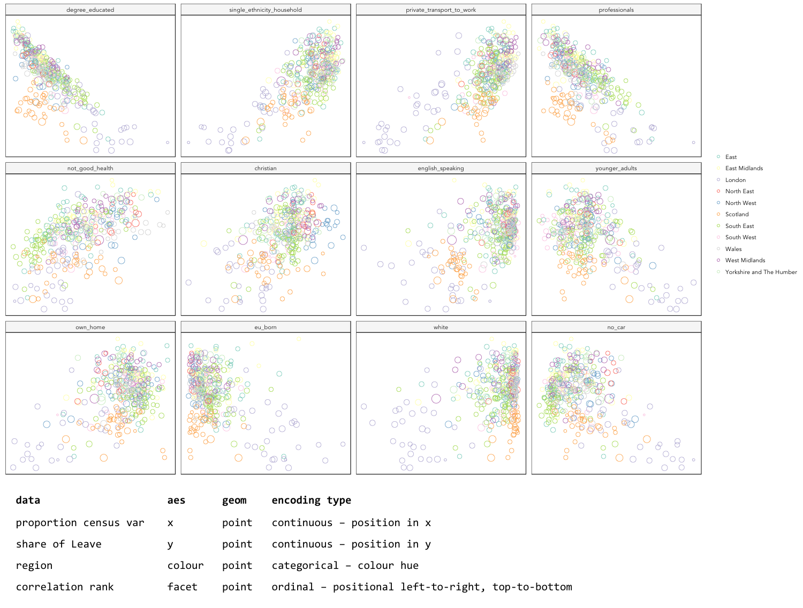
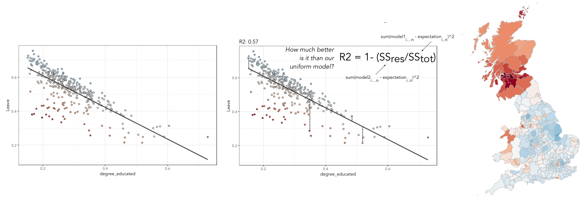
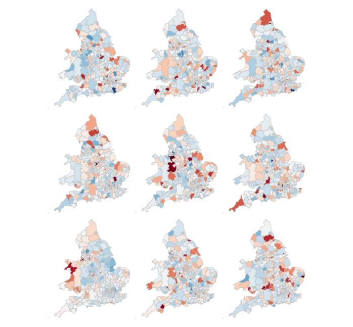
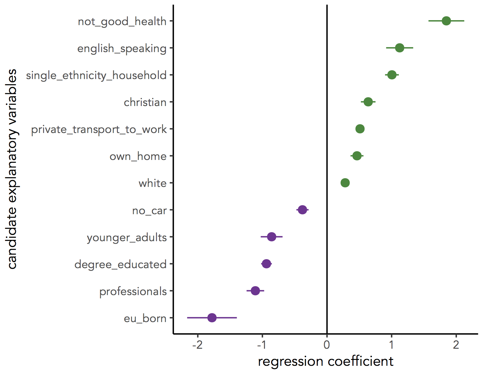

Task 1. Explore bivariate relationships using correlation

You finished last week’s session by plotting maps of the Leave:Remain vote and of different Census variables. Visually scanning across the maps, you might have observed that variation in the vote by Local Authority (LA) tends to co-vary with variation in the demographic characteristics of LAs. Any systematic co-variation would be interesting given the popular discourse on the Leave:Remain vote — that Leave represented those people and places structurally left behind by economic change.
Any covariation in voting behaviour and demographics can be analysed more directly through correlation analysis. You will have learnt that the correlation coefficient can be used to summarise the strength of linear association between two variables. It is a quantity that ranges from perfect negative correlation (-1) to perfect positive correlation (+1) and can be considered a measure of effect size to the extent that it describes how much of something (correlation in this case) exists.
The code below allows the share of Leave vote and demographic characteristics of LAs to be examined using this quantity (correlation coefficient) as well as visually through a scatterplot (created using ggplot2).
# Calculate correlation coefficient of share Leave by degree-educated.
data_gb %>%
summarise(cor(share_leave, degree_educated))
# Generate scatterplot of share Leave by degree-educated.
data_gb %>%
ggplot(aes(x=share_leave, y=degree_educated)) +
geom_point(colour="#525252",pch=21, alpha=0.8) +
theme_bw()|
Type |
Task 2. Generate graphical small multiples
Data analysis relies heavily on comparison. You might ask:
-
How do current rates of smoking in a small area compare to other small areas with similar population dynamics?
-
When compared with previous years, does the increase in smoking rates between 2016-2017 represent a significant shift?
Such comparisons can soon become complex and multifaceted.
One visualization solution for supporting such detailed comparison is small multiples — a set of graphics juxtaposed next to one another, ideally in a meaningful order, such that they can be compared. For a deeper overview, check out Nathan Yau’s overview of small multiples.
ggplot2 and related packages usefully support small multiples with functions such as facet_wrap() and tm_facet(). A requirement of calls to these various facet functions is Tidy data — that is, where just one observation appears per row. Rows in the the data frame are then split and a separate chart is created for each tranche of data.
To generate small multiples of the scatterplots in the previous section — share of Leave against Census variables — we have to collapse our data frame such that a single row is given to each Local Authority (LA) and Census variable — basically we need to make our data frame taller and thinner. The tidyr package provides methods that allow these types of operations. In the code block below the gather() method is used to collapse multiple columns into rows. Remember you can check the documentation for this function by typing into the R Console ?gather.
data_gb %>%
gather(c(younger_adults:eu_born), key = "expl_var", value="la_prop") %>%
ggplot(aes(x=la_prop, y=share_leave))+
geom_point(colour="#525252",pch=21)+
facet_wrap(~expl_var, scales="free")+
theme_bw()
|
Whilst one form of untidy data is observations distributed amongst columns, the reverse is also common — where observations are duplicated amongst rows. tidyr provides a helper function ( |
Task 3. Build, explore and test models
Create a univariate linear model
In the previous task you explored variables that not only correlate with the share of Leave vote but also correspond to phenomena that might help explain variation in the vote. We can try to build models that attempt to quantify this — that allow estimates of the effects of variables on the Leave vote.
As suggested visually and by its correlation coefficient (r. -0.76), there appears to be a strong negative linear association between the Leave vote and proportion of residents in LAs educated to degree-level and above. We can model for this relationship and talk about the effect of degree-educated (explanatory variable) on the Leave vote (outcome) using linear regression. First, a best fit line representing this linear model can be added to the scatterplot with the command: geom_smooth(method = "lm", se = FALSE). We can also generate an object holding this model with the lm() command.
# Add OLS regression line to the scatterplot.
data_gb %>%
ggplot(aes(x=degree_educated, y=share_leave))+
geom_point(colour="#525252",pch=21)+
geom_smooth(method = "lm", se = FALSE, colour="#525252")+
theme_bw()
# Generate a univariate linear model object regressing the Leave vote on the
# degree-educated variable. Store object with name "lm_degree_educated".
lm_degree_educated <- lm(share_leave ~ degree_educated, data = data_gb)
summary(lm_degree_educated)
# output
# Call:
# lm(formula = share_leave ~ degree_educated, data = data_gb)
#
# Residuals:
# Min 1Q Median 3Q Max
# -0.26244 -0.01661 0.01646 0.04377 0.13250
#
# Coefficients:
# Estimate Std. Error t value Pr(>|t|)
# (Intercept) 0.79723 0.01227 64.95 <2e-16 ***
# degree_educated -0.93703 0.04148 -22.59 <2e-16 ***
# ---
# Signif. codes: 0 ‘***’ 0.001 ‘**’ 0.01 ‘*’ 0.05 ‘.’ 0.1 ‘ ’ 1
#
# Residual standard error: 0.06804 on 378 degrees of freedom
# Multiple R-squared: 0.5745, Adjusted R-squared: 0.5733
# F-statistic: 510.3 on 1 and 378 DF, p-value: < 2.2e-16|
If you’re new to regression and the output of the |
Inspect residuals from the univariate model
The regression coefficients that appear after calls to summary(<model-object>) simply describe the regression line — and the regression line tells us, on average, what the Leave vote would be if it were entirely dependent on the proportion of the population educated to degree-level. Since there is a strong negative association between Leave and degree-educated, the slope of the regression line is negative. The coefficient for degree-educated (Estimate Std. -0.937) can be interpreted as: a one unit increase in the degree-educated population in a LA has the effect of decreasing the Leave vote by c.0.94 units.
But how successful is this model? To what extent is variation in the Leave vote entirely a function of variation in the proportion of people in LAs educated to degree-level? It is possible to quantify how well the model fits the data, and importantly where it fits the data, by calculating residuals. Residuals are simply the difference between an observed value and the value expected by the model. The coefficient of determination (R-squared), a quantity you may have encountered earlier in the term, is simply the sum of squared residuals divided by the squared sum of total residuals (or variance). It tells us how much of the variation in the outcome can be accounted for by the model. In this case 57% of variation in the observed Leave vote can be explained with variation in the degree-educated variable (see output screen).
Ideally residuals should follow a normal distribution and distribute randomly around the regression line, with no obvious systematic structure. One means of testing for normality is to simply generate a histogram on the residual variable, as in the block below.
# Extract and store model residuals
data_gb$resids_degrees = as_tibble(resid(lm_degree_educated))$value
# Plot histogram of residuals.
data_gb %>%
ggplot(aes(resids_degrees))+
geom_histogram()As can be seen from the histogram, the distribution of residuals is closer to log normal. Inspecting the scatterplot, there is a group of LAs with observed Leave vote shares much lower than expected by our model. Plotting them spatially, we find that they are overwhelmingly concentrated in Scotland. Given the very clear break with Scotland and the rest of the country, there is a strong argument for developing a separate model for England & Wales. Rather than a smooth spatial process, which we sometimes see in maps of residuals, Scotland is categorically distinct.

Study spatial autocorrelation in residuals
If you successfully completed the individual coding task and generated a map and scatterplot of residuals from a linear model regressing Leave on degree-educated, you will have observed that the residuals distribute reasonably nicely (randomly) around the regression line of the scatterplot. The choropleth map on EW-only data suggests that there may still be spatial structuring to the residuals — patches of red and blue of similar intensities tend to collect together.
Geographers typically test for spatial autocorrelation such as this using spatial statistics — you may have already encountered Moran’s I, a measure of effect size for spatial autocorrelation. They do so by comparing an observed value of Moran’s I against a theoretical distribution that would result under complete spatial randomness (CSR) — in this case, this is the assumption that regression residuals distribute around LAs in EW entirely independent of location.
An alternative approach is to perform such a test visually — comparing the observed Choropleth against a set of Choropleths that one might expect to see under CSR (or some other sensible assumption — Beecham et al. 2017). The code below enables such a graphical inference test (Wickham et al. 2010).
# Function for generating map line-up test
do_lineup <- function(data) {
real <- sample(1:9,1)
for(i in 1:12) {
if(i==real) {
data <- cbind(data, data$value)
colnames(data)[i+1] <- paste("p", i, sep = "")
}
else {
permutation <- sample(data$value,nrow(data))
data <- cbind(data, permutation)
colnames(data)[i+1] <- paste("p", i, sep = "")
}
}
# Draw maps
map <- tm_shape(data) +
tm_fill(c("p1","p2","p3","p4","p5","p6","p7","p8","p9"),style="cont", palette="RdBu")+
tm_borders(col="gray80", lwd=1)+
tm_layout(legend.show=FALSE, frame=FALSE, title.size = 0.8,title.position = c("right", "bottom"))
tm_layout(legend.show=FALSE, frame=FALSE)
print(map)
print(real)
}
# Do line-up on EW model
do_lineup(data_ew %>% select(geometry, value=resids_degrees))
Task 4. Data challenge
Assessed Task
This is a short, assessed task. It does not assume knowledge or coding skills above what you have learnt in the previous two sessions. Ideally, the task should be completed within the workshops sessions — the aim is not to burden you with additional work.
The task is designed to assess your:
-
ability to produce outputs in R
-
understanding of data types and their encoding through statistical graphics
-
interpretation of quantitative structure in datasets
Assessed task 1. Calculate
Assessed task 2. Plot
Assessed task 3. Model and Map
Optional aside for the interested R user
As part of Task 4 you may have considered fitting univariate models separately for each of the candidate explanatory variables from the 2011 Census. To help with this, we can use new packages — purrr and broom — again written under the Tidy data design philosophy.
# Generate univariate models separately on each explanatory variable.
univariate_models <- data_gb %>%
select(c(lad15nm, share_leave), younger_adults:eu_born) %>%
gather(., key = "expl_var", value="la_prop", -c(share_leave, lad15nm)) %>%
group_by(expl_var) %>%
nest() %>%
mutate(model = purrr::map(data, ~lm(share_leave ~ la_prop, data=.)),
broom::tidy = purrr::map(model, tidy)) %>%
unnest(tidy, .drop = TRUE) %>%
filter(term != "(Intercept)")
# Differentiate sign on regression coefficients when plotting.
b1_sign <- c("#7b3294","#008837")
# Plot regression coefficients from separate univariate models.
univariate_models %>%
mutate(sign=ifelse(estimate>0,"pos","neg")) %>%
ggplot(aes(x=reorder(expl_var,estimate), y=estimate))+
geom_pointrange(aes(ymin=estimate-2*std.error, ymax = estimate+2*std.error,colour = factor(sign)),
position=position_dodge(.9))+
geom_hline(aes(yintercept=0))+
theme_classic()+
xlab("candidate explanatory variables")+
ylab("regression coefficient")+
scale_colour_manual(values=b1_sign)+
coord_flip()
Further reading (non-essential)
-
Beecham, R. et al. (in press) Locally-varying explanations behind the United Kingdom’s vote to leave the United Kingdom. Journal of Spatial Information Science. code.
-
Beecham, R. et al. (2017) Map line-ups: effects of spatial structure on graphical inference. IEEE Transactions on Visualization & Computer Graphics, 23(1):391–400. We propose and evaluate through a large crowd-sourced experiment a particular approach to graphical inference testing using maps. Full data analysis code and talk is available at the paper website.
-
Wickham, H. et al. (2010) Graphical Inference for Infovis. IEEE Transactions on Visualization and Computer Graphics, 16(6):973–979. Hadley Wickham’s seminal piece on graphical inference — well worth a read, if only for his erudite description of statistical testing and NHST.